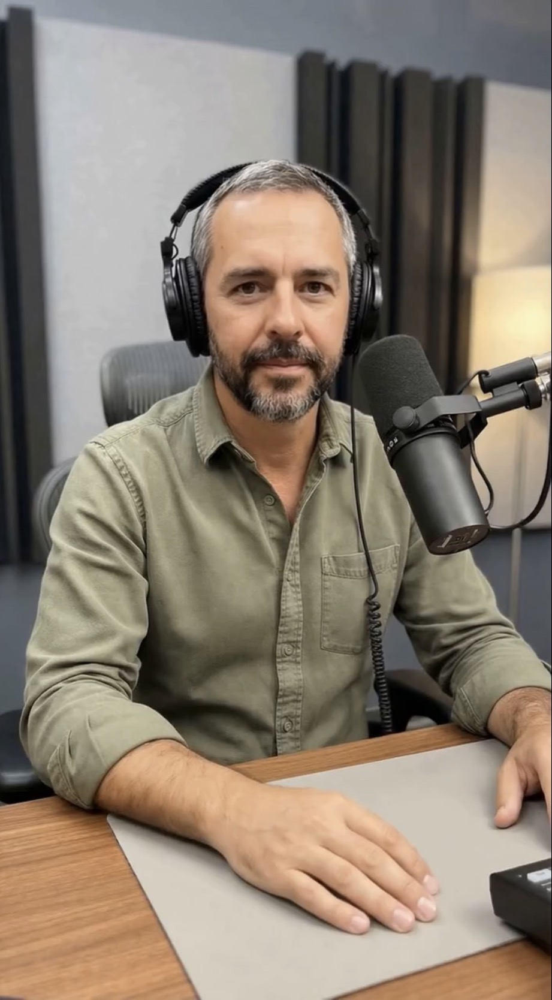

Idea e visione
Definizione del percorso e degli obiettivi didattici. Dall’intuizione iniziale alla direzione condivisa.

Un progetto costruito nel dialogo tra docente e intelligenza artificiale.
Le lezioni, le PWA, le mappe e questo sito sono il risultato di una collaborazione continua tra esperienza umana e intelligenza artificiale: idee, revisioni, prove, correzioni e scelte condivise.
Apri copertina
Questa pagina racconta il metodo: non un uso decorativo dell’IA, ma una collaborazione progettuale in cui il docente conserva direzione, giudizio e responsabilità.
Da una parte il docente che conosce classe, programma e obiettivi. Dall’altra una macchina dialogante che aiuta a progettare, riscrivere, visualizzare e ordinare.

Docente, ricercatore e creatore di percorsi didattici digitali. Porta esperienza, metodo, passione per la conoscenza e responsabilità educativa.
Intelligenza artificiale dialogante. Ascolta, propone, chiarisce, riorganizza, visualizza e costruisce insieme nel dialogo.
Ogni materiale nasce da un ciclo: idea, struttura, scrittura, immagine, verifica, revisione.
Definizione del percorso e degli obiettivi didattici. Dall’intuizione iniziale alla direzione condivisa.
Struttura delle lezioni, delle sezioni e dei percorsi. Organizzazione dei contenuti e scelta degli strumenti.
Riscrittura, chiarificazione, correzione e messa a fuoco. Ogni testo nasce, si affina e diventa più solido.
Mappe, schemi, immagini, pagine e interfacce. La conoscenza prende forma visiva per diventare memorabile.
PWA, ambienti 3D/VR e strumenti interattivi. Testare, migliorare, innovare insieme.
Il risultato non è un singolo prodotto, ma un laboratorio in evoluzione.
Lezioni strutturate, approfondimenti, letture e analisi su autori, temi e concetti.
Applicazioni web per studio offline, navigazione fluida e accesso continuo.
Mappe concettuali, schemi visivi e percorsi logici per collegare idee.
Ricostruzioni, ambienti virtuali ed esperienze immersive per entrare nella storia e nella cultura.
Un laboratorio digitale organizzato, elegante e in evoluzione.
Quando il dialogo funziona, la tecnologia smette di essere effetto speciale e diventa metodo.
“Un’idea prende forma quando il dialogo diventa costruzione.”